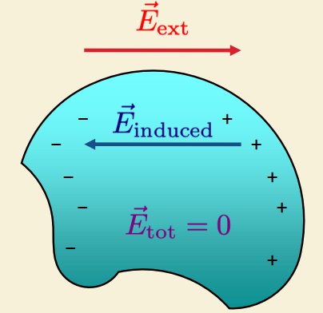
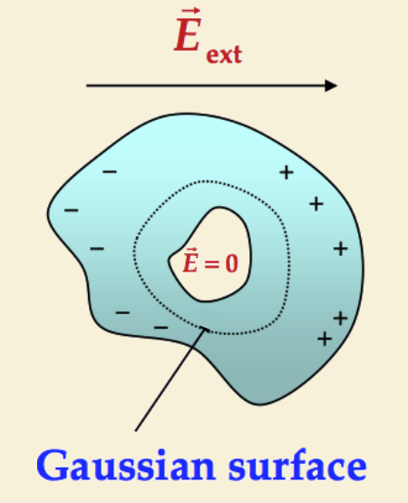
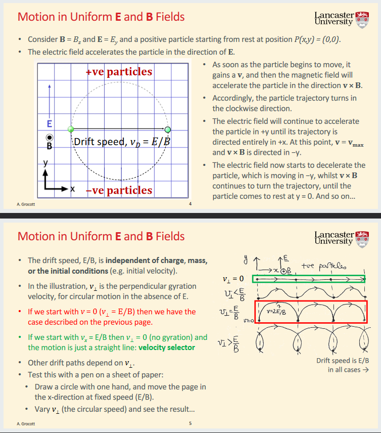
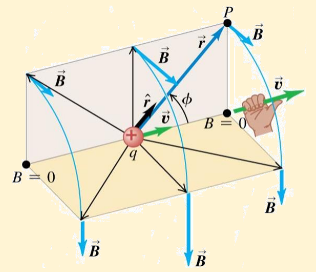
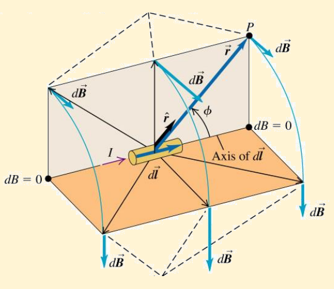

Coulomb found that the force was proportional to the product of the two charges, and inversely proportional to the square of the distance between them: \[|F|=k\frac{|q_1q_2|}{r^2}\] where \(k=\frac{1}{4\pi\epsilon_0}\)
The electric field, \(\mathbf{E}\), (\(NC^{-1}\))at a point is defined as the electric force, \(\mathbf{F}_0\), experienced by a test charge \(q_0\) at that point, divided by the charge \(q_0\), when \(q_0\) approaches zero: \[\mathbf{E}=\lim_{q_0\to 0}\frac{\mathbf{F}_0}{q_0}=k\frac{q}{r^2}\mathbf{\hat{r}}=k\frac{q}{r^3}\mathbf{r}\] A test charge is used, as it's effect on the field are negligible. If the electric field \(\mathbf{E}\) at a given point is known, the force acting on a charge \(q_0\) is given by: \[\mathbf{F}=q_0\mathbf{E}\] To combine E fields, or Forces, we use the vector sum: i.e. \(\mathbf{F}_{total}=\mathbf{F}_1 +\mathbf{F}_2+\mathbf{F}_3\)
Electric flux is a measure of the “flow” of the electric field through a given surface. Consider a flat area \(A\) perpendicular to a uniform electric field. The electric flux (\(Nm^2C^{-1}\))\(\Phi_E\) is defined as: \[\Phi_E=EA\] When considering area vectors, the direction of the vector is outward and perpendicular to the closed surface. It is often appropriate to consider the area as a sum of elements, hence: \[d\Phi_E=\mathbf{E}\cdot d\mathbf{A}\implies\Phi_E=\iint d\Phi_E=\iint\mathbf{E}\cdot d\mathbf{A}\]
Let's compute the electric flux through a sphere of radius R, when the charge is in the centre of the sphere. \[\Phi_E=E\iint dA=E(4\pi R^2)=\frac{1}{4\pi\epsilon_0}\frac{q}{R^2}(4\pi R^2)=\frac{q}{\epsilon_0}\] Therefore the electric flux is independent of the radius of the sphere!
\[\Phi_E=\oint E\cdot dA=\frac{q}{e}\] It is essential that the surface is closed. Total flux does not depend on the shape of the surface. Only the charge inside the surface matters!
\[\Phi_E=\oint E\cdot dA=0\] If a field line from an external charge enters the surface at one point, it must leave it at another. This means the flux is 0.
From the previous section it follows that: \[\Phi_E=\oint \mathbf{E}\cdot d\mathbf{A} = \frac{Q_{encl}}{\epsilon_0}\] We can setup Gaussian surfaces to calculate the flux through them to simplify calculations
The total charge of a symmetrical organised charged object is related to the charge density: \[\rho=\frac{Q}{V}=\frac{Q}{4/3\pi R^3}\quad\Leftrightarrow\quad Q=\frac{4}{3}\pi R^3\rho\] and \[\sigma=\frac{Q}{A}\] We can use this to calculate how the electric field varies within the object itself.
A recipe for determining the electric field \(E\):

This separation of charges produces an induced electric field. The electrons will move until the induced field, which they produce, compensates the external field. Therefore, in the electrostatic case (no current), the electric field inside any conductor must be exactly zero.
Consider a positively-charged conductor. Any charge inside the conductor creates an electric field. This field acts on the free electrons inside the conductor. The electrons will move in this field towards the positive charge. This process continues until the total field inside the conductor becomes zero. In that case, the excess charge must exist entirely on the surface. A cavity within a conductor will be shielded from external electric fields by the same principle as above.

When charge \(q_0\) moves from point \(a\) to point \(b\), the work done is: \[W_{a\to b}=\int^b_a\mathbf{F}\cdot d\mathbf{l}=\frac{1}{4\pi\epsilon_0}\int^b_a\frac{qq_0}{r^2}\cos\phi\;dl\]
\[V=\frac{U}{q_0}\] Work \[\frac{W}{q_0}=V_a-V_b\implies W=V_{ab}q_0\] Potential Difference \[V_{ab}=V_a-V_b\] Relationship Between Potential and Electric Field: \[\mathbf{E}=-\nabla V\]
...is defined as: \[C=\frac{Q}{V}=\frac{\epsilon_0A}{d}\] The energy stored in a capacitor is: \(U=\frac{Q^2}{2C}=\frac{1}{2}CV^2=\frac{1}{2}QV\) Remember \(V=Ed\). They follow the opposite relations of resistors in series and parallel.
\[d\Phi_B=\mathbf{B}\cdot d\mathbf{A}=B\cos\phi\;dA\]
\[\Phi_B=\iint \mathbf{B}\cdot d\mathbf{A}=\iint B\cos\phi\;dA\]
For a magnetic field, an isolated magnetic charge does not exist. Magnets always have two poles, therefore field lines will never have end points. Thus, Gauss' law for magnetic field is: \[\Phi_B=\oint\mathbf{B}\cdot d\mathbf{A}=0\] (For a closed surface)
Any charge moving in a pure magnetic field experiences a force given by: \[\mathbf{F}=q\mathbf{v}\times\mathbf{B}\] The total electromagnetic force, called the Lorentz force is thus: \[\mathbf{F}=q(\mathbf{E}+\mathbf{v}\times\mathbf{B})\] The significance of the vector cross product in the magnetic force equation is that the force is not aligned with the field, but perpendicular to it. \[\mathbf{F}=|q|v|B|\sin\phi\] Notes on velocity selectors, mass spectrometers are better understood with the slides for L9.

\[\mathbf{F}=q\mathbf{v}\times\mathbf{B}=qvB\sin\phi\;\mathbf{n}\]
\[N=nAl\]
\[\mathbf{F}=I\mathbf{l}\times\mathbf{B}=IlB\sin\phi\]
The net force on a current carrying loop is 0, and the net torque on the loop is: \[\tau=\mu B\sin\phi\]
A moving charge produces a magnetic field: \[\mathbf{B}=\frac{\mu_0}{4\pi}\frac{q\mathbf{v}\times\mathbf{\hat{r}}}{r^2}\] where \(\mathbf{\hat{r}}\) is the unit radial vector perpendicular to \(\mathbf{B}\) and \(r\) is the radial distance to the point at which the field is obtained. \(\mu_0=4\pi\times 10^{-7}\textrm{TmsC}^{-1}\) : Permeability of free space.

We can also write the field magnitude in terms of an angle \(\phi\) between the velocity vector \(\mathbf{v}\) and the direction \(\mathbf{\hat{r}}\): \[\mathbf{B}=\frac{\mu_0}{4\pi}\frac{|q|v\sin\phi}{r^2}\]
The magnetic field produced by a short segment of wire is: \[\mathbf{dB}=\frac{\mu_0}{4\pi}\frac{Id\boldsymbol{\ell}\times\mathbf{\hat{r}}}{r^2}\] This is the Biot-Savart Law.

The magnetic field (magnitude) produced by a current in an infinite length line is: \[\mathbf{B}=\frac{\mu_0 I}{2\pi r}\]
We can find the integral of magnetic field around a wire from the following. We will declare a infinitesimally small step around the field as \(d\ell\), (not the same as Biot-Savart law \(d\ell\)) \[\oint \mathbf{B}\cdot d\boldsymbol{\ell}=\mu_0I_{encl}\]
A recipe for determining the magnetic field \(B\):
Examples
In general we should use vector notation in case the field and velocity are not perpendicular: \[\epsilon=\int^a_b(\mathbf{v}\times\mathbf{B})\;d\boldsymbol{\ell}\] Note the similarity with what we learned about electric fields and potential difference: \[V=\int^b_a\mathbf{E}\cdot d\boldsymbol{\ell}\] Consistent with the schematic on the right, this yields: \[\mathbf{E}=-(\mathbf{v}\times\mathbf{B})\] Interestingly, we find that if the conductor forms a closed loop: \[\epsilon=\oint(\mathbf{v}\times\mathbf{B})\;d\boldsymbol{\ell}\]
This is used in PHYS134, for inductors. \[\epsilon=-A\frac{d\mathbf{B}}{dt}=-\frac{d\Phi_B}{dt}=-\mathbf{B}\frac{dA}{dt}\] \[\epsilon=-N\frac{d\Phi_B}{dt}=-N\mathbf{B}\frac{dA}{dt}\]
Maxwell noted that the presence of a changing electric field inside a capacitor, for example, produces a changing magnetic field, such that Ampere’s Law must be modified. Inclusion of an ‘imaginary’ current, called the displacement current, accounts for the electric field producing a magnetic field just like a real current would: \[\oint\mathbf{B}\cdot d\boldsymbol{\ell}=\mu_0I_{encl}+\mu_0I_{disp}\] The displacement current is defined to be: \[I_{disp}=\epsilon_0\frac{d\Phi_E}{dt}\] such that \[\oint\mathbf{B}\cdot d\boldsymbol{\ell}=\mu_0I_{encl}+\mu_0\epsilon_0\frac{d\Phi_E}{dt}\]
From the entirety of the summary note so far, we have the four Maxwell's Equations:
\[\begin{align} (1)\quad&\Phi_E=\oint\mathbf{E}\cdot d\mathbf{A}=\frac{Q_{encl}}{\epsilon_0}\\ (2)\quad&\Phi_B=\oint\mathbf{B}\cdot d\mathbf{A}=0\\ (3)\quad&\oint\mathbf{B}\cdot d\boldsymbol{\ell}=\mu_0I_{encl}+\mu_0\epsilon_0\frac{d\Phi_E}{dt}\\ (4)\quad&\oint\mathbf{E}\cdot d\boldsymbol{\ell}=-\frac{d\Phi_B}{dt} \end{align}\]
Note: NOT ASSESSED After completing PHYS115-Vector Calculus, it becomes apparent the usefulness of vector calculus in this module. Maxwell's equations can be rewritten in the following (easier to remember) form: \[\begin{align} &(1)\quad\nabla\cdot\mathbf{E}=\frac{\rho}{\epsilon_0}\\ &(2)\quad\nabla\cdot\mathbf{B}=0\\ &(3)\quad\nabla\times\mathbf{B}=\mu_0J+\mu_0\epsilon_0\frac{\partial\mathbf{E}}{\partial t}\\ &(4)\quad\nabla \times\mathbf{E}=-\frac{\partial\mathbf{B}}{\partial t}\\ \end{align}\] \(J\) is the current density, such that: \[J=\frac{I}{A}\] where \(I\) is the current flowing through the cross sectional area \(A\).